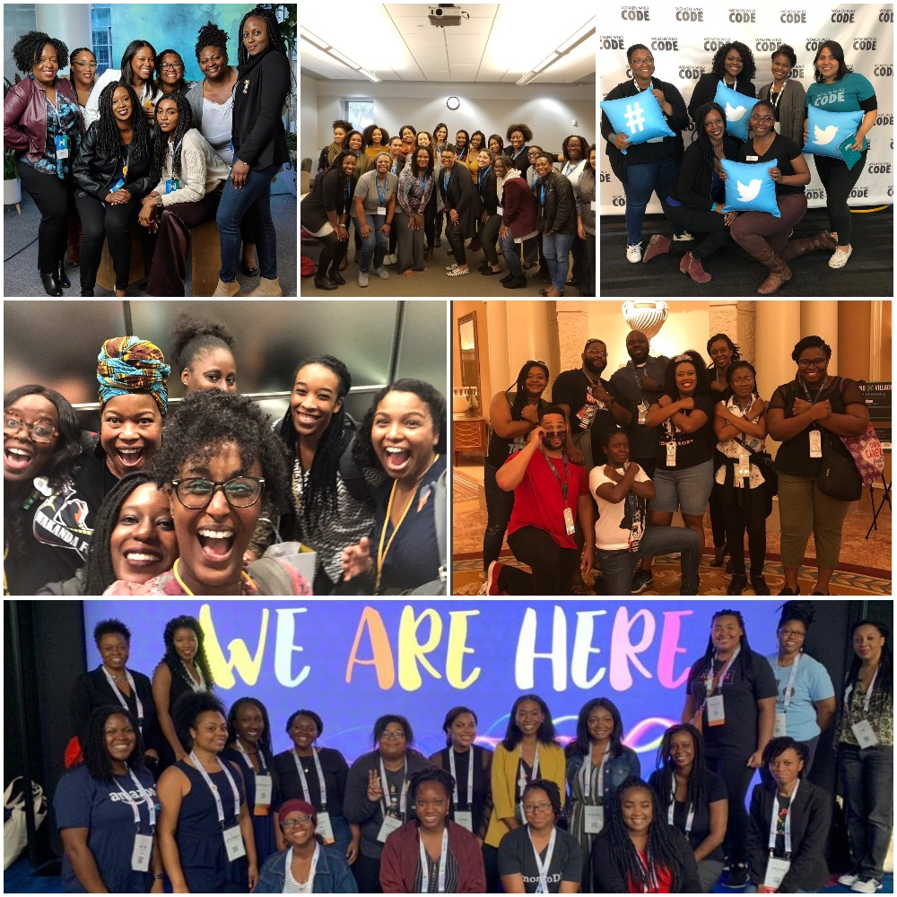
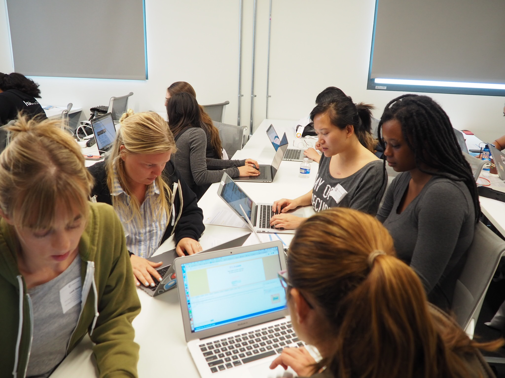
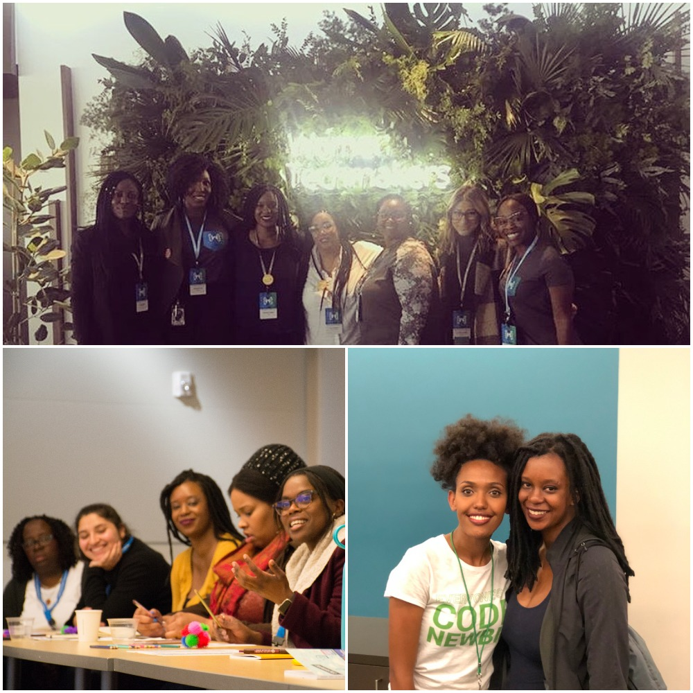
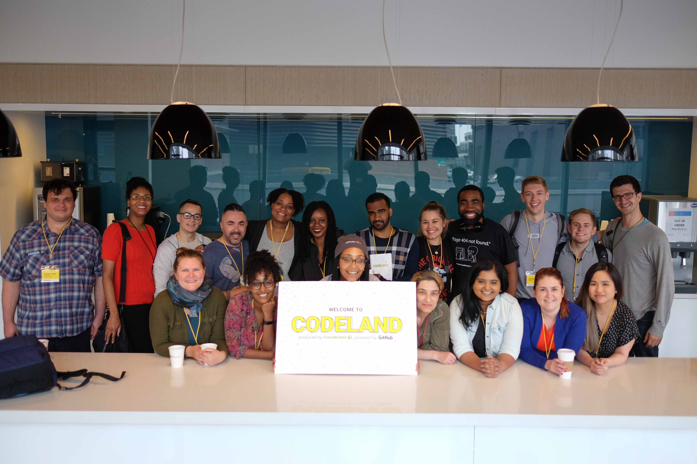
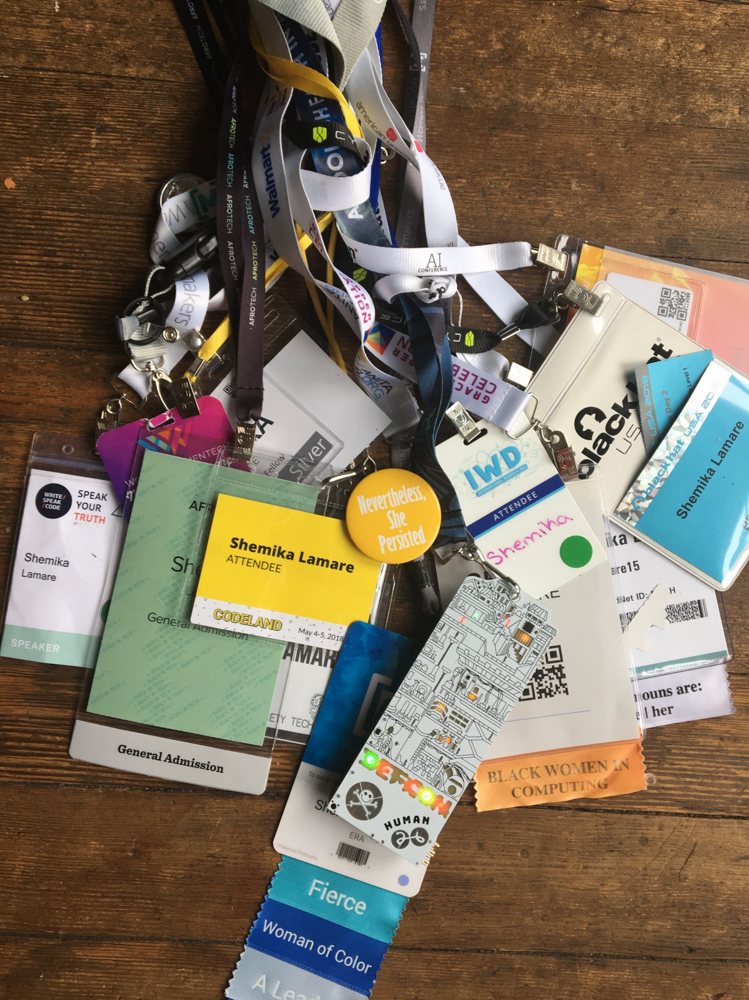
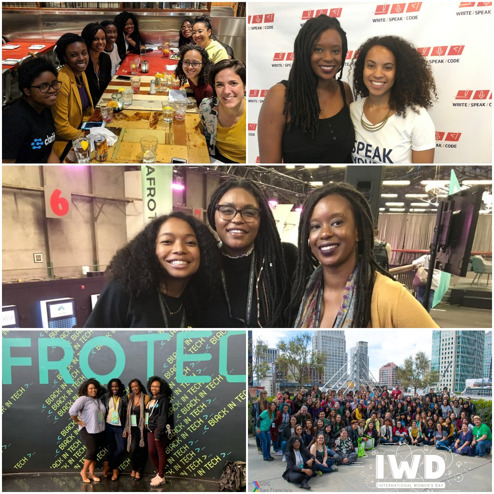

This year, I went to 18 conferences. Yes, 18 conferences, it wasn't my intention but I'm so happy I did it! I initially thought that I should attend a few conferences to learn more about the tech field and build my community. It somehow turned into my Year of Conferences and I just decided to go for it. I wanted to share some of the highlights.

Upsides and Downsides
I walked away with a ton of swag (too many shirts, buttons, and pens), made connections with other data enthusiast, and women in tech - some of whom have become close friends. The downside was at times it was exhausting; I'm very much an introvert so I need time to recharge. Being surrounded by lots of people, who are generally eager to chat can be draining. I found it was important for me to take walks or go to the quiet room (when available) to replenish my energy.
Would I recommend other people do a Year of Conferences?
No. Nope. Not necessary. I don't think anyone needs to go to 18 conferences in one year, but I would suggest people try and attend a conference at least once a year! If you identify as a member of an underrepresented group; conferences might even have incentives in the form of scholarships or vouchers to help you attend!My Favorites
I'm sure you're curious to know which conferences were my favorite. Before I spill the tea, I just want to say that I am grateful to have had the opportunity to attend every single conference. Every conference was beneficial in its own way, but these were the ones that continue to stand out. Links to the conferences can be found at the end of the post.Top 5 Conferences:
What all these conferences have in common is that their communities are phenomenal. I think it's the community that really sets the vibe and it played a role in how inclusive it felt. I genuinely had fun at these conferences, learned new things, and met amazing people!Write.Speak.Code
Their conferences are all about getting more women and non-binary
folks writing code, speaking at conferences, and contributing to open
source. They provide practical tools and resources. They designate
time to give attendees a chance to not only learn how to get started
but to also walk away with drafts or even complete blogs, CFP's (call for proposals)
and commits to open source! What makes this community special is
they have clearly put in the work to ensure that all folks feel included,
you name it, they have thought of it. Quiet room, nursing room, inclusive
language from speakers, pins with pronouns, stickers for showing if you were
comfortable being photographed, food for people with dietary restrictions and
the list goes on. They are receptive to feedback and wanted to ensure everyone
is comfortable. I can't speak highly enough of the founder Rebecca and the folks
that have worked to create the community and conferences. Not to mention it was
a big part of getting me started with public speaking (I spoke four times this year)!
Codeland
Codeland is a newbie friendly tech conference. The CodeNewbie
community is great for those starting their journey in tech, everyone
is so welcoming and enthusiastic! It was refreshing to go to a conference
with one track. It may seem like it might limit how much a person can
take-away, but Saron did such an amazing job. All the talks were
phenomenal and they covered a wide range of topics in tech, so I still
found myself attentive and intrigued. She gave a closing talk and
discussed how much thought went into planning this conference and
making it inclusive. From ensuring that her speakers were well prepared,
the detailed program book, the size, the food, and so much more.
And who could forget the AMAZING hype-man who kept our energy up,
got us dancing (yes we danced) and we even heard a rap about tech.
Tech Intersections
Tech Intersections is an affordable conference exclusive to
women of color with a range of topics from technical talks to
leadership skills (they also offer an Ally Workshop). This was the
best way to start my year of conferences, surrounded by women of
color in tech. It was a warm and welcoming space; I knew that I could
be my authentic self and I think that was the first time I truly felt
like that in a tech space. There were so many great talks that it was
hard to choose which to attend, making me wish I could clone myself
so I could sit in on all of them.
Women Who Code Connect
Women Who Code Connect is a developer conference that focuses on
connecting women in tech. This might have been the point in the year
when I realized how much I loved connecting with people, learning about
their work and their tech journeys. I met so many people at this conference
and I went to some great talks, but the highlight was networking. The energy
was contagious.
Afrotech
Afrotech is a conference for Black techies, startups, and entrepreneurs.
I think I've become so accustomed to being one of the only Black people
or women in the room that I forgot how isolating it can be. Walking into
Afrotech was a feeling like no other: I was surrounded by Black Excellence.
I can't count the number of times I realized I was fangirling and awkwardly
staring at someone. I couldn't have asked for a better way to end my year of conferences.
Honorable Mentions: AnxietyTech, Heartifacts, Day of Shecurity
I wanted to give a shoutout for these small but mighty conferences that
I felt were so important. Anxiety Tech and Heartifacts are both conferences
geared around mental health and tech. What I love the most about them was
how honest everyone was about their mental health journeys. Day of Shecurity
was so interactive. I got to play Capture the Flag, which was much more fun
than having someone discuss a topic. I wish more conferences had workshops this
well organized!

Top 5 Talks:
I attended too many talks and workshops to count, and these talks stay with me because they were engaging, funny, and well executed.Paul Lamere,
Using Big Data to improve the music listening experience - Codeland
This was by far one of the best talks I have had the pleasure of hearing.
It was informative, relatable and hilarious! And who doesn't love data
and machine learning? Paul works at Spotify and walked us through experiments
they've done and the nuances that they find, like artist names with weird characters,
too repetitive titles. It's full of fun music facts and my favorite experiment
was when they tried to expose a listener to new music from Katy Perry to Dimmu Borgir.
I was laughing throughout the talk and got to learn about machine learning at Spotify,
so it was a win-win situation.
Colleen Schnettler,
How To Learn To Code When You Have No Time And No Money - Codeland
Colleen shared her programming journey and it felt good to hear someone
mention setbacks. Particularly with the rise of bootcamps, it's fairly easy
to come across stories about someone doing a bootcamp and landing their job
in a short amount of time. She told her story of how she became a developer,
the different setbacks she went through, and how she made it. She also gave great
tips for newbies looking to transition into tech. It was a truly inspirational talk!
Zachary Zlotnik,
The Mental Impact of Tech Interviews - Heartifacts
When I attended this conference I hadn't done a technical interview,
but the points Zachary mentioned resonated with me and got me questioning
the tech interview process as well. He brings up some great points about
"what if other jobs had similar interview processes". I appreciated his candor
of mentioning how draining it can be and calling out a process that needs some
serious improvement.
Erica Joy Baker,
The Truth about Silicon Valley - Tech Intersections
This was the first conference and first keynote I heard and phew it was nothing
short of phenomenal. Erica shared her journey in tech and talked about the problems
she faced. It was refreshing to hear someone candidly review the tech industry.
She walked us through her journey and how she handled white spaces and the tech scene.
Jessica O. Matthews,
Uncharted Power - Grace Hopper Celebration
Jessica is basically the real-life Shuri. Hearing her story of how she
became a CEO and built her company that is innovative and gives back to
her community. I appreciate how she was willing to say she didn't know
how she got to where she was and how not everyone has their life goals
planned out. "Being underestimated was the best thing that happened to me."
She related how all parts of her life have added to her journey. Not only was
her talk inspiring; she also jumped rope in her heels. Need I say more?.

Best Food:
The content of the conference is important, but we can't forget to re-energize and I've come to appreciate the food options. These conferences hands down had the best food. And for me, that means it was tasty and there were options for those with varying dietary restrictions. Best food (and tasty snacks) goes to Write Speak Code, Codeland, PyBay, and Women Who Code Connect.
Best Badge:
Random, but I've kept almost all the badges from this year which are hanging up in my room. So it's only fair that I mention the best badge, it goes to DefCon, without debate! Look at it!! It lights up and has a built-in game that allows you to connect your badge to others.
What I take away from this year is that it was important for me to see representation, hear stories that resonate and speak to my experiences, along with meeting other people just as enthusiastic about tech and data science. If we met this year, Thank You for being a part of my journey!
- Tech Intersections
- Write.Speak.Code - Own Your Expertise
- Women Techmakers: International Women's Day
- GoogleDeveloperGroup: International Women's Day
- Heartifacts
- O'Reilly AI NY
- Codeland
- PyCon
- Women Who Code Connect
- Day of Shecurity
- AnxietyTech
- Write.Speak.Code
- DefCon/Black Hat
- PyBay
- GraceHopper
- Wonder Women Tech
- OSDC
- Afrotech

Fun Fact: I prefer my beverages room temperature, even if its 100 degrees outside. Hold the ice, please.